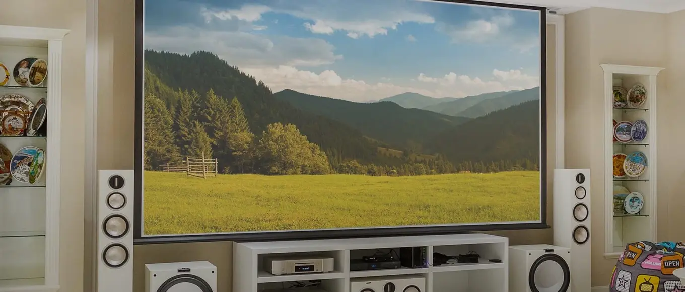

Кинозал в Пушкино
Московская область · 30 рабочих дней
Создание домашнего кинотеатра в Московской области

Стоимость и срок указаны для этого объекта. Смета нового проекта зависит от помещения, комплектации и состава работ.
В гостиной квартиры разместили персональный кинотеатр. Расстановку оборудования согласовали с повседневным использованием комнаты.
Заказчик, обратившийся в нашу компанию, поставил задачу оборудовать в гостиной комнате е персональный современный кинотеатр для просмотра качественных фильмов в объёмном звучании. На момент проектирования системы домашнего кинотеатра в помещении производился черновой ремонт. Площадь комнаты не превышает 50 м2.
Специалистами ГК Айтек был успешно завершён проект по комплексному оснащению объекта современным мультимедийным оборудованием под ключ. В ходе реализации проекта был произведён весь спектр работ: поставка оборудования, проектирование, строительные работы, акустическое оформление, монтаж и пусконаладка оборудования. Состав реализованного комплекса: Профессиональный 4K кинопроектор с световым потоком 1800 люмен Проекционный экран с системой натяжения размером 165 х 295мм Звуковая hi-end система в формате Dolby Atmos 11.2 Профессиональный медиапроигрыватель с большой базой видеофильмов Централизованное управление всем оборудованием с единого пульта
Поскольку формат данного помещения имеет несколько универсальный характер и не особым образом подходит под все существующие стандарты для персонального кинотеатра, пришлось искать некий компромисс между устоявшимися канонами и желаниями Заказчика, ведь требовалось создать именно кинозал. Светлое помещение, яркие тона интерьера и отделки, максимально гладкие поверхности, идеально отражающие звуковые волны - все это конечно мешало, но нам удалось воплотить задуманное.
Для сохранения максимальной целостности интерьера и практичности самого помещения мы постарались подбирать оборудование таким образом, чтобы его было максимально незаметно.
Проекционный экран – неотъемлемая часть любого кинотеатра, от которого напрямую зависит качество воспроизводимого контента и, как следствие, комфорт при его просмотре. Конструктивная особенность экрана позволила осуществить его установку непосредственно заподлицо потолка и тем самым обеспечить максимальную незаметность. За счет встроенного электропривода экран при просмотре кинофильма можно опустить, а по его завершении – поднять и скрыть за потолком.
Проектор от компании SIM был выбран не случайно, во-первых, стильный дизайн и белый цвет корпуса идеально вписывались в существующий дизайн помещения, а во-вторых, технические показатели проектора способны обеспечить идеальную картинку даже в светлое время суток при минимальном уровне шума.
Акустическая система Canton в белом корпусе идеально вписалась в интерьер и позволила создать равномерную трехмерную звуковую картину. Особенность акустических систем заключается в том, что при приемлемой стоимости они способны не только к озвучиванию кинофильмов, но и к просушиванию музыкальных композиций в высоком разрешении.
В силу отсутствия отдельного помещения для установки всего оборудования, оборудование было подобрано таким образом, при котором его размещение уместилось в специализированной мебельной стойке.
В бриф перейдут выбранный проект, тип помещения и бюджет примера. Все параметры можно изменить.